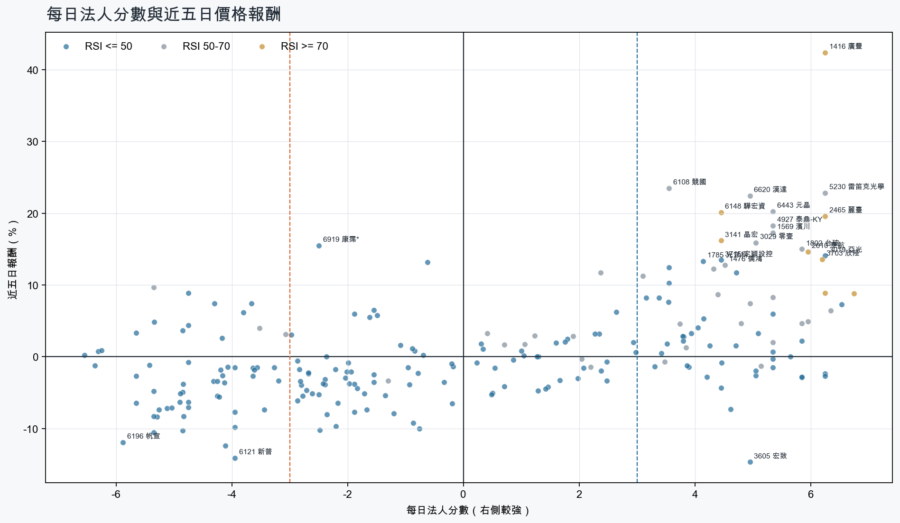
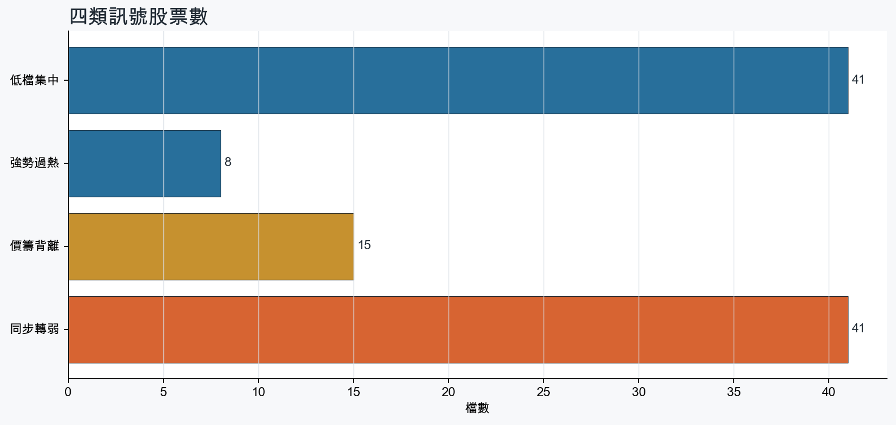
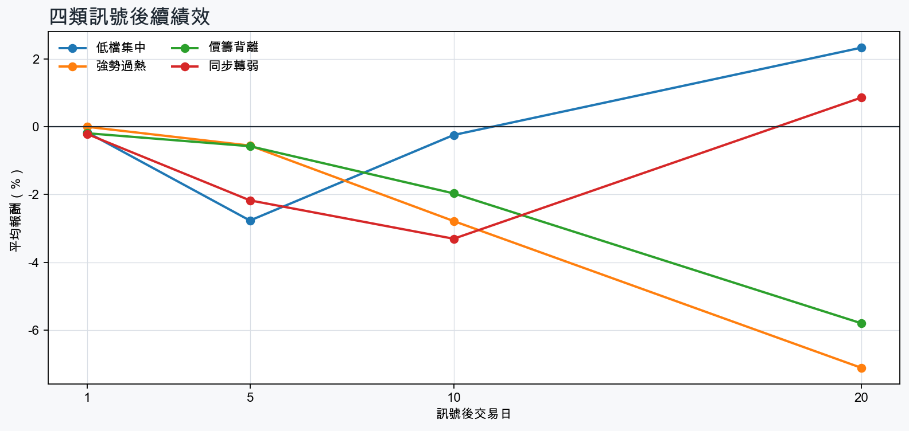

市場情緒中性分歧
近5日法人合計-5,150,918 張
篩選池上漲比例44.1%
籌碼好 / RSI低15 檔
籌碼差 / 價跌15 檔



EPS × PE VALUATION
法人常用的相對估值
顯示保守、基準與樂觀估值帶，不把單一數字包裝成精準目標價。
最新累計 EPS 依季數年化 × 同產業有效 P/E 的 Q25／中位數／Q75。排除本公司、非正 P/E，並以 1.5×IQR 排除離群值。估值帶是公開資料篩選值，不是法人目標價；未使用分析師預估 EPS。
MOOD × MONEY
情緒與籌碼雷達
熱度代表被討論程度；情緒分與法人方向分開計算。熱門不等於適合追價，樣本不足也不硬判多空。
| 股票 | 情緒 | 討論熱度 | 情緒 × 籌碼 | 情緒 × 基本面 |
|---|---|---|---|---|
| 0050 元大台灣50價籌背離 | 中性分歧 +9.9信心 100 | 1003 篇 / 579 留言 / 3 則新聞 | 高熱分歧法人分 -5.7 | 基本面與情緒分歧基本面分 +0.0 |
| 2454 聯發科價籌背離 | 情緒高漲 +55.1信心 100 | 892 篇 / 271 留言 / 3 則新聞 | 熱門但法人撤退法人分 -3.7 | 基本面與情緒分歧基本面分 +0.8 |
| 2308 台達電價籌背離 | 情緒高漲 +59.8信心 100 | 862 篇 / 217 留言 / 3 則新聞 | 熱門但法人撤退法人分 -3.8 | 基本面與情緒共振基本面分 +3.6 |
| 1815 富喬低檔集中 | 情緒高漲 +51.9信心 100 | 743 篇 / 84 留言 / 3 則新聞 | 情籌共振法人分 +4.0 | 基本面與情緒共振基本面分 +2.0 |
| 2646 星宇航空低檔集中 | 情緒高漲 +41.9信心 76 | 731 篇 / 94 留言 / 2 則新聞 | 情籌共振法人分 +3.8 | 基本面與情緒共振基本面分 +2.0 |
| 3189 景碩同步轉弱 | 中性分歧 +0.0信心 94 | 712 篇 / 75 留言 / 3 則新聞 | 高熱分歧法人分 -4.0 | 基本面與情緒分歧基本面分 +3.6 |
| 2323 中環同步轉弱 | 偏空 -30.2信心 85 | 713 篇 / 72 留言 / 1 則新聞 | 情籌雙弱法人分 -5.3 | 基本面佳、情緒悲觀基本面分 +2.0 |
| 2492 華新科同步轉弱 | 偏多 +20.8信心 54 | 591 篇 / 34 留言 / 1 則新聞 | 熱門但法人撤退法人分 -4.0 | 基本面與情緒共振基本面分 +2.0 |
| 8112 至上低檔集中 | 偏多 +34.7信心 65 | 591 篇 / 27 留言 / 3 則新聞 | 情籌共振法人分 +3.5 | 基本面與情緒共振基本面分 +3.0 |
| 3044 健鼎價籌背離 | 情緒高漲 +60.2信心 60 | 551 篇 / 18 留言 / 3 則新聞 | 熱門但法人撤退法人分 -4.3 | 基本面與情緒共振基本面分 +3.6 |
| 2347 聯強同步轉弱 | 中性分歧 +0.0信心 30 | 360 篇 / 0 留言 / 3 則新聞 | 情籌混合法人分 -4.1 | 基本面與情緒分歧基本面分 +3.0 |
| 2449 京元電子同步轉弱 | 中性分歧 +0.0信心 30 | 360 篇 / 0 留言 / 3 則新聞 | 情籌混合法人分 -4.8 | 基本面與情緒分歧基本面分 +3.6 |
01
籌碼好 / RSI低
優先研究基本面；法人續買且價格止穩時，才適合分批觀察。
| 股票 / 確認狀態 | 每日法人分 | 浦男式近似 | 法人加速度 | RSI / 相對強弱 | 量價確認 | 融資融券 | 每週集保確認 | 基本面 | EPS × 同業 P/E 估值 | 情緒 / 情籌 | 近期消息 | 論壇討論 |
|---|---|---|---|---|---|---|---|---|---|---|---|---|
| 4916 事欣科可研究 · 100 分籌碼與價格確認，可列研究清單 | +5.3法人 +1,596 張 / 4 天 | 接近 · 90站上月線；法人籌碼偏多；法人買盤加速；留意中期均線未翻多 | +3,413 張近3日 +2,328 / 連續 +4 日 | 50.0相對大盤 +13.7% | 量比 1.37確認分 +6.520日線低於60日線 | -%融資 - 張 / 融券 - 張 | +4.07 pp1000張 +4.63 pp | 單月營收年增 +70.3%；累計營收年增 +63.0%仍需觀察下一期財報延續性來源：公開資訊觀測站 | 不適用最新財報缺少可年化 EPS | 偏多 +29.7熱度 36 / 信心 30情籌共振 | 事欣科10月營收年月雙增，前10月年增近七成台視全球資訊網 · 11/10【即時新聞】事欣科10月營收突破7億大關，曾合併之恩德今日最新營收表現引發關注CMoney投資網誌 · 11/10 | 近期沒有明確提及本股的論壇樣本 |
| 5388 中磊可研究 · 100 分籌碼與價格確認，可列研究清單 | +6.5法人 +2,887 張 / 5 天 | 接近 · 86站上月線；法人籌碼偏多；法人買盤加速；留意中期均線未翻多、動能位置非最佳 | +2,413 張近3日 +2,568 / 連續 +5 日 | 42.1相對大盤 +8.1% | 量比 2.08確認分 +5.020日線低於60日線 | -%融資 - 張 / 融券 - 張 | -0.23 pp1000張 -1.46 pp | 單月營收年增 +47.4%；累計營收年增 +54.2%；2026 Q3 累計 EPS 4.342026 Q3 累計營益率 3.4%來源：公開資訊觀測站 | 基準 NT$ 124.7估值帶 78.81–236.3現價 71.90 · 低於估值帶 · 距基準 +73.4%2026 Q3 累計 EPS 4.34 → 年化 5.79通信網路同業 P/E 13.62／21.55／40.84 · n=62 · 信心較高以 Q3 累計 EPS 年化，不等同分析師全年預估來源：TWSE／TPEx 每日本益比 | 偏多 +29.7熱度 36 / 信心 30情籌共振 | 《通網股》中磊Q3三率三升EPS達1.75元前三季賺贏去年全年- 上市櫃旺得富理財網 · 11/11中磊前三季EPS 4.34元賺贏去年全年 AI帶動電信商升級需求鉅亨網 · 11/10 | 近期沒有明確提及本股的論壇樣本 |
| 3019 亞光可研究 · 100 分籌碼與價格確認，可列研究清單 | +6.2法人 +3,516 張 / 5 天 | 接近 · 90站上月線；法人籌碼偏多；法人買盤加速；留意中期均線未翻多 | +2,682 張近3日 +2,943 / 連續 +5 日 | 49.5相對大盤 +7.7% | 量比 1.40確認分 +4.920日線低於60日線 | -%融資 - 張 / 融券 - 張 | +0.43 pp1000張 -0.74 pp | 累計營收年增 +13.4%；2026 Q3 累計 EPS 5.98；2026 Q3 累計營益率 10.8%單月營收年增 -0.1%來源：公開資訊觀測站 | 基準 NT$ 178.8估值帶 92.57–278.8現價 133.5 · 估值帶內 · 距基準 +34.0%2026 Q3 累計 EPS 5.98 → 年化 7.97光電同業 P/E 11.61／22.43／34.97 · n=70 · 信心中等以 Q3 累計 EPS 年化，不等同分析師全年預估來源：TWSE／TPEx 每日本益比 | 樣本不足 +0.0熱度 0 / 信心 0情緒樣本不足 | 近期沒有通過股票語境篩選的新聞 | 近期沒有明確提及本股的論壇樣本 |
| 5475 德宏可研究 · 100 分籌碼與價格確認，可列研究清單 | +3.5法人 +2,074 張 / 2 天 | 命中 · 95站上月線；中期均線偏多；法人籌碼偏多；留意買超延續不足 | +2,645 張近3日 +2,205 / 連續 +1 日 | 46.4相對大盤 +9.3% | 量比 1.03確認分 +6.5價格、量能與籌碼未見明顯弱項 | -%融資 +0 張 / 融券 +0 張 | +1.08 pp1000張 +1.75 pp | 單月營收年增 +388.1%；累計營收年增 +201.8%仍需觀察下一期財報延續性來源：公開資訊觀測站 | 不適用最新財報缺少可年化 EPS | 偏多 +29.7熱度 36 / 信心 30情籌共振 | 德宏(5475)前10月營收年增逾兩倍！Q紗開始出貨，Q布量產等到2027年LINE TODAY · 11/11熱門股／玻纖布續強！德宏10月營收創高與台玻、富喬同衝漲停| 產經非凡新聞台 · 11/11 | 近期沒有明確提及本股的論壇樣本 |
| 4903 聯光通等待確認 · 94 分籌碼有訊號，但價格尚未確認 | +4.5法人 +2,286 張 / 3 天 | 接近 · 80中期均線偏多；法人籌碼偏多；法人買盤加速；留意未站月線、量能異常 | +2,568 張近3日 +1,885 / 連續 -1 日 | 48.2相對大盤 +9.3% | 量比 0.44確認分 +3.8收盤跌破20日線；成交量不足 | -5.0%融資 -232 張 / 融券 +22 張 | -0.01 pp1000張 +1.20 pp | 單月營收年增 +66.7%；累計營收年增 +25.7%；2026 Q3 累計 EPS 0.372026 Q3 累計營益率 2.6%來源：公開資訊觀測站 | 基準 NT$ 9.91估值帶 6.65–17.29現價 50.80 · 高於估值帶 · 距基準 -80.5%2026 Q3 累計 EPS 0.37 → 年化 0.49通信網路同業 P/E 13.48／20.09／35.05 · n=60 · 信心較高以 Q3 累計 EPS 年化，不等同分析師全年預估來源：TWSE／TPEx 每日本益比 | 中性分歧 +0.0熱度 36 / 信心 30情籌混合 | 聯光通明年EPS年增率80%以上理財周刊 · 11/11聯光通明年EPS年增率80%以上台灣好新聞 · 11/11 | 近期沒有明確提及本股的論壇樣本 |
| 3715 定穎投控可研究 · 100 分籌碼與價格確認，可列研究清單 | +4.5法人 +5,984 張 / 3 天 | 命中 · 96站上月線；中期均線偏多；法人籌碼偏多 | +9,297 張近3日 +7,702 / 連續 +3 日 | 47.6相對大盤 +8.3% | 量比 1.87確認分 +6.5價格、量能與籌碼未見明顯弱項 | -%融資 - 張 / 融券 - 張 | -1.34 pp1000張 -0.04 pp | 單月營收年增 +84.7%；累計營收年增 +51.3%2026 Q3 累計 EPS -1.44；2026 Q3 累計營益率 5.0%來源：公開資訊觀測站 | 不適用年化 EPS 非正數，不適合使用本益比估值 | 偏空 -29.7熱度 36 / 信心 30法人布局、市場悲觀 | 定穎投控(3715) 引 Prismark 示警！AI 投資放緩可能讓 PCB 短期衰退 10% 到 15%優分析UAnalyze · 11/11熱門股／PCB財報報喜！泰鼎-KY、定穎投控等逾10檔漲停金像電亮燈重返千元| 產經非凡新聞台 · 11/11 | 近期沒有明確提及本股的論壇樣本 |
| 8112 至上可研究 · 96 分籌碼與價格確認，可列研究清單 | +3.5法人 +3,669 張 / 3 天 | 接近 · 90站上月線；法人籌碼偏多；法人買盤加速；留意中期均線未翻多 | +2,495 張近3日 +2,656 / 連續 +2 日 | 47.7相對大盤 +9.3% | 量比 2.19確認分 +5.020日線低於60日線 | -%融資 - 張 / 融券 - 張 | -0.54 pp1000張 -0.89 pp | 單月營收年增 +233.5%；累計營收年增 +184.5%；2026 Q3 累計 EPS 17.452026 Q3 累計營益率 3.4%來源：公開資訊觀測站 | 基準 NT$ 245.5估值帶 195.9–353.4現價 83.40 · 低於估值帶 · 距基準 +194.3%2026 Q3 累計 EPS 17.45 → 年化 23.27電子通路同業 P/E 8.42／10.55／15.19 · n=29 · 信心較高以 Q3 累計 EPS 年化，不等同分析師全年預估來源：TWSE／TPEx 每日本益比 | 偏多 +34.7熱度 59 / 信心 65情籌共振 | 8112 至上 - 昨天尾盤是有巴到- 股市爆料同學會CMoney · 11/11【12:50 即時新聞】至上(8112) 股價走強，記憶體營收成長成盤中焦點CMoney投資網誌 · 11/11 | [情報] 8112 至上 Q3 EPS 7.88 前三季 17.45PTT Stock · 11-10 · 27 留言 |
| 4147 中裕可研究 · 97 分籌碼與價格確認，可列研究清單 | +4.7法人 +1,684 張 / 5 天 | 接近 · 90站上月線；法人籌碼偏多；法人買盤加速；留意中期均線未翻多 | +51 張近3日 +921 / 連續 +7 日 | 48.1相對大盤 +16.4% | 量比 1.01確認分 +4.720日線低於60日線 | -0.2%融資 -23 張 / 融券 +3 張 | +0.06 pp1000張 -0.26 pp | 單月營收年增 +35.7%；累計營收年增 +10.5%仍需觀察下一期財報延續性來源：公開資訊觀測站 | 不適用最新財報缺少可年化 EPS | 樣本不足 +0.0熱度 0 / 信心 0情緒樣本不足 | 近期沒有通過股票語境篩選的新聞 | 近期沒有明確提及本股的論壇樣本 |
| 2353 宏碁等待確認 · 86 分籌碼有訊號，但價格尚未確認 | +3.9法人 +22,049 張 / 4 天 | 接近 · 71法人籌碼偏多；法人買盤加速；買超具延續性；留意未站月線、中期均線未翻多 | +13,670 張近3日 +15,381 / 連續 -1 日 | 38.0相對大盤 +7.5% | 量比 0.74確認分 +2.1收盤跌破20日線；20日線低於60日線 | -%融資 - 張 / 融券 - 張 | +0.80 pp1000張 +0.69 pp | 單月營收年增 +17.6%；累計營收年增 +24.0%；2026 Q3 累計 EPS 1.672026 Q3 累計營益率 2.2%來源：公開資訊觀測站 | 基準 NT$ 33.00估值帶 24.34–42.04現價 30.40 · 估值帶內 · 距基準 +8.6%2026 Q3 累計 EPS 1.67 → 年化 2.23電腦及週邊同業 P/E 10.93／14.82／18.88 · n=79 · 信心較高以 Q3 累計 EPS 年化，不等同分析師全年預估來源：TWSE／TPEx 每日本益比 | 偏多 +19.8熱度 30 / 信心 20情籌混合 | 2353 宏碁 - APEC領袖峰會下周11/18 總統府宣布：由宏碁創辦人施振榮擔任代表- 股市爆料同學會CMoney · 11/11宏碁10月營收263.91億元創5年新高 PC業務持續成長鉅亨網 · 11/09 | 近期沒有明確提及本股的論壇樣本 |
| 6269 台郡可研究 · 96 分籌碼與價格確認，可列研究清單 | +3.5法人 +6,274 張 / 2 天 | 命中 · 83站上月線；中期均線偏多；法人籌碼偏多；留意買超延續不足、基本面中性 | +10,000 張近3日 +8,201 / 連續 -1 日 | 42.8相對大盤 +38.9% | 量比 0.95確認分 +6.5價格、量能與籌碼未見明顯弱項 | -%融資 - 張 / 融券 - 張 | -0.33 pp1000張 +0.04 pp | 累計營收年增 +1.3%單月營收年增 -2.7%來源：公開資訊觀測站 | 不適用最新財報缺少可年化 EPS | 中性分歧 +0.0熱度 30 / 信心 20情籌混合 | 6269 台郡- 第三季淨利年增70% 明天繼續噴- 股市爆料同學會CMoney · 11/11台郡（6269）漲停後續走勢－熱門話題｜股市爆料同學會CMoney · 11/11 | 近期沒有明確提及本股的論壇樣本 |
| 3605 宏致等待確認 · 76 分籌碼有訊號，但價格尚未確認 | +5.0法人 +2,731 張 / 3 天 | 接近 · 65中期均線偏多；法人籌碼偏多；法人買盤加速；留意未站月線、明顯弱於大盤 | +4,996 張近3日 +3,711 / 連續 -1 日 | 33.5相對大盤 -15.2% | 量比 1.72確認分 -1.0收盤跌破20日線；近20日弱於大盤 | -%融資 - 張 / 融券 - 張 | +1.19 pp1000張 +2.26 pp | 單月營收年增 +22.7%；累計營收年增 +17.8%；2026 Q3 累計 EPS 3.312026 Q3 累計營益率 6.9%來源：公開資訊觀測站 | 基準 NT$ 98.77估值帶 67.21–150.8現價 136.5 · 估值帶內 · 距基準 -27.6%2026 Q3 累計 EPS 3.31 → 年化 4.41電子零組件同業 P/E 15.23／22.38／34.17 · n=146 · 信心較高以 Q3 累計 EPS 年化，不等同分析師全年預估來源：TWSE／TPEx 每日本益比 | 偏多 +19.8熱度 30 / 信心 20情籌混合 | 3605 宏致- Bloom Energy 擴產帶動商機，康舒、高力、宏致10 月營收齊揚- 股市爆料同學會CMoney · 11/11Bloom Energy 擴產帶動商機，康舒、高力、宏致 10 月營收齊揚TechNews 科技新報 · 11/11 | 近期沒有明確提及本股的論壇樣本 |
| 2646 星宇航空等待確認 · 84 分籌碼有訊號，但價格尚未確認 | +3.8法人 +7,947 張 / 5 天 | 接近 · 83站上月線；法人籌碼偏多；買超具延續性；留意中期均線未翻多、法人買盤未加速 | -1,125 張近3日 +3,882 / 連續 +6 日 | 50.0相對大盤 +9.7% | 量比 0.98確認分 +2.520日線低於60日線；法人買盤減速 | -%融資 - 張 / 融券 - 張 | +0.16 pp1000張 +0.13 pp | 單月營收年增 +68.9%；累計營收年增 +37.1%仍需觀察下一期財報延續性來源：公開資訊觀測站 | 不適用最新財報缺少可年化 EPS | 情緒高漲 +41.9熱度 73 / 信心 76情籌共振 | 星宇航空30億元現金增資，投資人如何認購新股？鏈新聞 ABMedia · 11/11受油價高漲拖累！星宇航空第3季虧2.93億 10月營收年增59%知新聞 · 11/11 | [情報] 2646星宇航空 Q3 -0.09PTT Stock · 11-11 · 94 留言 |
| 1815 富喬可研究 · 98 分籌碼與價格確認，可列研究清單 | +4.0法人 +9,281 張 / 2 天 | 命中 · 95站上月線；中期均線偏多；法人籌碼偏多；留意買超延續不足 | +63,972 張近3日 +28,597 / 連續 +1 日 | 47.1相對大盤 +18.3% | 量比 1.05確認分 +7.1價格、量能與籌碼未見明顯弱項 | -2.1%融資 -1,144 張 / 融券 -84 張 | -6.17 pp1000張 -7.05 pp | 單月營收年增 +85.6%；累計營收年增 +58.4%仍需觀察下一期財報延續性來源：公開資訊觀測站 | 不適用最新財報缺少可年化 EPS | 情緒高漲 +51.9熱度 74 / 信心 100情籌共振 | 今日漲停股｜玻纖布與半導體封測強勢領軍，台玻、富喬、南茂等強攻漲停1111｜豐雲學堂2026 年 11 月永豐金證券 · 11/11焦點股》富喬：高階玻纖布漲不停 投信瘋狂掃貨自由財經 · 11/11 | [新聞] 韭菜翻車連環爆！景碩、聯亞、富喬爆違約PTT Stock · 11-10 · 30 留言[情報] 1109 違約交割 富喬、聯亞PTT Stock · 11-09 · 29 留言 |
| 3006 晶豪科等待確認 · 82 分籌碼有訊號，但價格尚未確認 | +4.7法人 +2,135 張 / 4 天 | 接近 · 75法人籌碼偏多；法人買盤加速；買超具延續性；留意未站月線、中期均線未翻多 | +737 張近3日 -77 / 連續 +1 日 | 46.7相對大盤 +7.3% | 量比 0.73確認分 +2.1收盤跌破20日線；20日線低於60日線 | -%融資 - 張 / 融券 - 張 | -3.59 pp1000張 -3.47 pp | 單月營收年增 +470.2%；累計營收年增 +343.9%；2026 Q3 累計 EPS 64.54仍需觀察下一期財報延續性來源：公開資訊觀測站 | 基準 NT$ 1,857估值帶 1,274–3,181現價 235.0 · 低於估值帶 · 距基準 +690.2%2026 Q3 累計 EPS 64.54 → 年化 86.05半導體同業 P/E 14.81／21.58／36.96 · n=154 · 信心較高以 Q3 累計 EPS 年化，不等同分析師全年預估來源：TWSE／TPEx 每日本益比 | 樣本不足 +0.0熱度 0 / 信心 0情緒樣本不足 | 近期沒有通過股票語境篩選的新聞 | 近期沒有明確提及本股的論壇樣本 |
| 2464 盟立等待確認 · 79 分籌碼有訊號，但價格尚未確認 | +5.8法人 +3,121 張 / 4 天 | 接近 · 69法人籌碼偏多；法人買盤加速；買超具延續性；留意未站月線、中期均線未翻多 | +2,627 張近3日 +2,547 / 連續 +4 日 | 46.6相對大盤 -1.2% | 量比 1.11確認分 +0.7收盤跌破20日線；20日線低於60日線 | -%融資 - 張 / 融券 - 張 | -3.29 pp1000張 -2.61 pp | 單月營收年增 +78.0%；累計營收年增 +36.7%；2026 Q3 累計 EPS 3.572026 Q3 累計營益率 4.9%來源：公開資訊觀測站 | 基準 NT$ 90.96估值帶 64.16–135.7現價 163.0 · 高於估值帶 · 距基準 -44.2%2026 Q3 累計 EPS 3.57 → 年化 4.76其他電子同業 P/E 13.48／19.11／28.51 · n=67 · 信心較高以 Q3 累計 EPS 年化，不等同分析師全年預估來源：TWSE／TPEx 每日本益比 | 樣本不足 +0.0熱度 0 / 信心 0情緒樣本不足 | 近期沒有通過股票語境篩選的新聞 | 近期沒有明確提及本股的論壇樣本 |
02
籌碼好 / RSI高
趨勢強但不追價，等待量縮、RSI降溫或回測支撐。
| 股票 / 確認狀態 | 每日法人分 | 浦男式近似 | 法人加速度 | RSI / 相對強弱 | 量價確認 | 融資融券 | 每週集保確認 | 基本面 | EPS × 同業 P/E 估值 | 情緒 / 情籌 | 近期消息 | 論壇討論 |
|---|---|---|---|---|---|---|---|---|---|---|---|---|
| 2618 長榮航等待拉回 · 100 分等拉回，不追價 | +6.8法人 +79,323 張 / 5 天 | 接近 · 90站上月線；中期均線偏多；法人籌碼偏多；留意RSI過熱 | +29,545 張近3日 +56,742 / 連續 +10 日 | 78.5相對大盤 +20.9% | 量比 2.49確認分 +6.5價格、量能與籌碼未見明顯弱項 | -%融資 - 張 / 融券 - 張 | +1.75 pp1000張 +1.80 pp | 單月營收年增 +32.9%；累計營收年增 +19.5%；2026 Q3 累計 EPS 3.50仍需觀察下一期財報延續性來源：公開資訊觀測站 | 基準 NT$ 47.65估值帶 39.95–56.79現價 47.60 · 估值帶內 · 距基準 +0.1%2026 Q3 累計 EPS 3.50 → 年化 4.67航運業同業 P/E 8.56／10.21／12.17 · n=25 · 信心較高以 Q3 累計 EPS 年化，不等同分析師全年預估來源：TWSE／TPEx 每日本益比 | 偏多 +29.7熱度 36 / 信心 30情籌共振 | 長榮航前三季EPS 3.5元；看好Q4航空貨運旺季- 新聞MoneyDJ · 11/11客貨雙旺長榮航10月營收攀次高- 日報工商時報 · 11/11 | 近期沒有明確提及本股的論壇樣本 |
| 3703 欣陸等待拉回 · 100 分等拉回，不追價 | +6.2法人 +7,096 張 / 5 天 | 命中 · 96站上月線；中期均線偏多；法人籌碼偏多；留意動能位置非最佳 | +5,069 張近3日 +6,335 / 連續 +8 日 | 74.6相對大盤 +28.9% | 量比 1.57確認分 +6.5價格、量能與籌碼未見明顯弱項 | -%融資 - 張 / 融券 - 張 | +0.94 pp1000張 +0.49 pp | 單月營收年增 +89.3%；累計營收年增 +3.4%；2026 Q3 累計 EPS 1.87仍需觀察下一期財報延續性來源：公開資訊觀測站 | 基準 NT$ 23.69估值帶 14.96–32.64現價 23.85 · 估值帶內 · 距基準 -0.7%2026 Q3 累計 EPS 1.87 → 年化 2.49建材營造同業 P/E 6.00／9.50／13.09 · n=64 · 信心較高以 Q3 累計 EPS 年化，不等同分析師全年預估來源：TWSE／TPEx 每日本益比 | 偏多 +19.8熱度 30 / 信心 20情籌混合 | 欣陸（3703）10月營收變化－熱門話題｜股市爆料同學會CMoney · 11/11欣陸投控Q3淨利超越上半年總和 1-3季獲利成長EPS達1.87元鉅亨網 · 11/09 | 近期沒有明確提及本股的論壇樣本 |
| 2610 華航等待拉回 · 100 分等拉回，不追價 | +6.0法人 +148,491 張 / 5 天 | 接近 · 80站上月線；中期均線偏多；法人籌碼偏多；留意量能異常、RSI過熱 | +26,591 張近3日 +92,083 / 連續 +8 日 | 80.6相對大盤 +24.9% | 量比 3.29確認分 +5.3價格、量能與籌碼未見明顯弱項 | -%融資 - 張 / 融券 - 張 | +2.01 pp1000張 +2.09 pp | 單月營收年增 +31.9%；累計營收年增 +20.0%；2026 Q3 累計 EPS 1.80仍需觀察下一期財報延續性來源：公開資訊觀測站 | 基準 NT$ 24.50估值帶 20.54–29.21現價 23.50 · 估值帶內 · 距基準 +4.3%2026 Q3 累計 EPS 1.80 → 年化 2.40航運業同業 P/E 8.56／10.21／12.17 · n=25 · 信心較高以 Q3 累計 EPS 年化，不等同分析師全年預估來源：TWSE／TPEx 每日本益比 | 中性分歧 +0.0熱度 36 / 信心 30情籌混合 | 拉抬權值股11日台股再漲1545點 華航再爆巨量股價創4.5個月新高理財周刊 · 11/11華航前三季EPS 1.8元；Q4客貨運展望佳Yahoo股市 · 11/11 | 近期沒有明確提及本股的論壇樣本 |
| 6757 台灣虎航等待拉回 · 100 分等拉回，不追價 | +6.2法人 +6,168 張 / 5 天 | 接近 · 86站上月線；法人籌碼偏多；法人買盤加速；留意中期均線未翻多、動能位置非最佳 | +2,657 張近3日 +4,663 / 連續 +8 日 | 73.0相對大盤 +20.7% | 量比 2.09確認分 +6.520日線低於60日線 | -%融資 - 張 / 融券 - 張 | +0.86 pp1000張 +0.76 pp | 單月營收年增 +36.2%；累計營收年增 +24.1%仍需觀察下一期財報延續性來源：公開資訊觀測站 | 不適用最新財報缺少可年化 EPS | 樣本不足 +0.0熱度 22 / 信心 10情緒樣本不足 | 【即時新聞】台灣虎航今日挾帶大量買盤攻上年線，前三季EPS達5.07元表現亮眼！CMoney投資網誌 · 11/11 | 近期沒有明確提及本股的論壇樣本 |
| 2465 麗臺等待拉回 · 100 分等拉回，不追價 | +6.2法人 +3,640 張 / 5 天 | 接近 · 82站上月線；中期均線偏多；法人籌碼偏多；留意量能異常、動能位置非最佳 | +2,852 張近3日 +2,959 / 連續 +5 日 | 77.5相對大盤 +77.5% | 量比 0.38確認分 +5.2成交量不足 | -%融資 - 張 / 融券 - 張 | +7.25 pp1000張 +1.18 pp | 累計營收年增 +109.3%；2026 Q3 累計 EPS 6.82；2026 Q3 累計營益率 8.8%單月營收年增 -25.4%來源：公開資訊觀測站 | 基準 NT$ 134.8估值帶 99.39–171.3現價 149.5 · 估值帶內 · 距基準 -9.9%2026 Q3 累計 EPS 6.82 → 年化 9.09電腦及週邊同業 P/E 10.93／14.82／18.84 · n=79 · 信心較高以 Q3 累計 EPS 年化，不等同分析師全年預估來源：TWSE／TPEx 每日本益比 | 偏多 +29.7熱度 36 / 信心 30情籌共振 | 焦點股》麗臺：Q3獲利驚豔 帶動全族群自由財經 · 11/112465 麗臺- 上市股價漲幅近13個交易日以來排行- 股市爆料同學會CMoney · 11/11 | 近期沒有明確提及本股的論壇樣本 |
| 1416 廣豐等待拉回 · 100 分等拉回，不追價 | +6.2法人 +7,823 張 / 5 天 | 接近 · 80站上月線；中期均線偏多；法人籌碼偏多；留意量能異常、RSI過熱 | +4,428 張近3日 +5,923 / 連續 +5 日 | 93.7相對大盤 +65.8% | 量比 4.06確認分 +5.3價格、量能與籌碼未見明顯弱項 | -%融資 - 張 / 融券 - 張 | +2.92 pp1000張 +2.29 pp | 單月營收年增 +70.5%；累計營收年增 +47.6%仍需觀察下一期財報延續性來源：公開資訊觀測站 | 不適用最新財報缺少可年化 EPS | 樣本不足 +0.0熱度 22 / 信心 10情緒樣本不足 | 【11:36 即時新聞】廣豐(1416)攻上漲停，營收續強帶動買盤關注CMoney投資網誌 · 11/11 | 近期沒有明確提及本股的論壇樣本 |
| 3141 晶宏等待拉回 · 100 分等拉回，不追價 | +4.5法人 +1,815 張 / 3 天 | 接近 · 86站上月線；法人籌碼偏多；法人買盤加速；留意中期均線未翻多、動能位置非最佳 | +1,778 張近3日 +1,827 / 連續 -1 日 | 71.4相對大盤 +23.8% | 量比 1.73確認分 +7.120日線低於60日線 | -3.3%融資 -237 張 / 融券 +63 張 | -1.23 pp1000張 -4.41 pp | 單月營收年增 +54.0%；累計營收年增 +28.1%；2026 Q3 累計 EPS 4.46仍需觀察下一期財報延續性來源：公開資訊觀測站 | 基準 NT$ 128.3估值帶 87.48–219.8現價 84.00 · 低於估值帶 · 距基準 +52.8%2026 Q3 累計 EPS 4.46 → 年化 5.95半導體同業 P/E 14.71／21.58／36.96 · n=154 · 信心較高以 Q3 累計 EPS 年化，不等同分析師全年預估來源：TWSE／TPEx 每日本益比 | 樣本不足 +0.0熱度 0 / 信心 0情緒樣本不足 | 近期沒有通過股票語境篩選的新聞 | 近期沒有明確提及本股的論壇樣本 |
| 6148 驊宏資等待拉回 · 98 分等拉回，不追價 | +4.5法人 +1,828 張 / 3 天 | 命中 · 88站上月線；中期均線偏多；法人籌碼偏多；留意基本面中性、動能位置非最佳 | +1,707 張近3日 +2,414 / 連續 -1 日 | 72.7相對大盤 +49.8% | 量比 1.28確認分 +5.9融資單日增幅偏高 | +8.7%融資 +248 張 / 融券 +165 張 | +1.05 pp1000張 +0.00 pp | 單月營收年增 +145.1%累計營收年增 -17.2%來源：公開資訊觀測站 | 不適用最新財報缺少可年化 EPS | 樣本不足 +0.0熱度 22 / 信心 10情緒樣本不足 | 【10:03 即時新聞】驊宏資(6148)亮燈漲停，資服族群買盤續點火CMoney投資網誌 · 11/11 | 近期沒有明確提及本股的論壇樣本 |
03
籌碼差 / 股價上漲
可能是事件行情或軋空；沒有籌碼改善前避免追高。
| 股票 / 確認狀態 | 每日法人分 | 浦男式近似 | 法人加速度 | RSI / 相對強弱 | 量價確認 | 融資融券 | 每週集保確認 | 基本面 | EPS × 同業 P/E 估值 | 情緒 / 情籌 | 近期消息 | 論壇討論 |
|---|---|---|---|---|---|---|---|---|---|---|---|---|
| 3209 全科風險警示 · 38 分背離警戒，避免追高 | -5.3法人 -3,083 張 / 1 天 | 未命中 · 55站上月線；明顯強於大盤；基本面有支撐；留意中期均線未翻多、法人籌碼偏弱 | -2,881 張近3日 -3,066 / 連續 -3 日 | 55.6相對大盤 +11.1% | 量比 5.05確認分 +1.420日線低於60日線；法人買盤減速 | -%融資 - 張 / 融券 - 張 | -0.83 pp1000張 -1.41 pp | 單月營收年增 +90.5%；累計營收年增 +46.7%仍需觀察下一期財報延續性來源：公開資訊觀測站 | 不適用最新財報缺少可年化 EPS | 樣本不足 +0.0熱度 22 / 信心 10情緒樣本不足 | 全科（3209）短線走勢預期－熱門話題｜股市爆料同學會CMoney · 11/11 | 近期沒有明確提及本股的論壇樣本 |
| 8150 南茂風險警示 · 24 分背離警戒，避免追高 | -5.3法人 -6,502 張 / 1 天 | 未命中 · 43法人買盤加速；量價健康；基本面有支撐；留意未站月線、中期均線未翻多 | +7,047 張近3日 -551 / 連續 +1 日 | 38.7相對大盤 -13.7% | 量比 1.68確認分 -1.0收盤跌破20日線；20日線低於60日線；近20日弱於大盤 | -%融資 - 張 / 融券 - 張 | -8.12 pp1000張 -7.57 pp | 單月營收年增 +33.8%；累計營收年增 +30.5%；2026 Q3 累計 EPS 3.89仍需觀察下一期財報延續性來源：公開資訊觀測站 | 基準 NT$ 111.9估值帶 76.30–191.7現價 88.20 · 估值帶內 · 距基準 +26.9%2026 Q3 累計 EPS 3.89 → 年化 5.19半導體同業 P/E 14.71／21.58／36.96 · n=154 · 信心較高以 Q3 累計 EPS 年化，不等同分析師全年預估來源：TWSE／TPEx 每日本益比 | 中性分歧 +0.0熱度 36 / 信心 30情籌混合 | 今日漲停股｜玻纖布與半導體封測強勢領軍，台玻、富喬、南茂等強攻漲停1111｜豐雲學堂2026 年 11 月永豐金證券 · 11/11【13:24 即時新聞】南茂(8150)亮燈漲停，封測族群買盤持續點火CMoney投資網誌 · 11/11 | 近期沒有明確提及本股的論壇樣本 |
| 0050 元大台灣50風險警示 · 20 分背離警戒，避免追高 | -5.7法人 -954,153 張 / 1 天 | 未命中 · 35法人買盤加速；相對大盤偏強；流動性足夠；留意未站月線、中期均線未翻多 | +1,103,765 張近3日 -74,536 / 連續 +1 日 | 41.9相對大盤 +2.0% | 量比 0.60確認分 +0.2收盤跌破20日線；20日線低於60日線；成交量不足 | -%融資 - 張 / 融券 - 張 | -213.06 pp1000張 -122.52 pp | 尚無明確成長訊號仍需觀察下一期財報延續性來源：公開資訊觀測站 | 不適用最新財報缺少可年化 EPS | 中性分歧 +9.9熱度 100 / 信心 100高熱分歧 | 【零股排行榜】 盤中零股成交量TOP 20｜0050 元大台灣50、2330 台積電、00878 國泰永續高股息、1802 台玻、1303 南亞 (1111)｜豐雲學堂2026 年 11 月永豐金證券 · 11/11未成年存股趨勢最新發布，19.4%帳戶鎖定台股ETF，元大台灣50奪冠！-財經焦點情報站CMoney投資網誌 · 11/11 | [心得] 主動ETF經理人，今年真的有贏0050嗎？PTT Stock · 11-07 · 330 留言[新聞] 重押2億買0050！郭哲榮遭傳破產「已提錢3PTT Stock · 11-08 · 180 留言 |
| 2454 聯發科風險警示 · 47 分背離警戒，避免追高 | -3.7法人 -8,081 張 / 1 天 | 未命中 · 53站上月線；法人買盤加速；量價健康；留意中期均線未翻多、法人籌碼偏弱 | +6,067 張近3日 -3,038 / 連續 +1 日 | 46.4相對大盤 -1.6% | 量比 1.07確認分 +2.620日線低於60日線 | -%融資 - 張 / 融券 - 張 | -1.93 pp1000張 -1.74 pp | 單月營收年增 +2.0%；累計營收年增 +5.3%仍需觀察下一期財報延續性來源：公開資訊觀測站 | 不適用最新財報缺少可年化 EPS | 情緒高漲 +55.1熱度 89 / 信心 100熱門但法人撤退 | 聯發科（2454）做什麼？Q3財報優於預期、執行長喊話挺股價，AI ASIC成長動能完整解析｜豐雲學堂2026 年 11 月永豐金證券 · 11/11聯發科10月營收月減！盤中高低震盪140元 分析師：收紅機率高Yahoo股市 · 11/11 | [情報] 2454聯發科10月營收 mom-0.67% yoy+5.77%PTT Stock · 11-10 · 194 留言[新聞] 台股吃糖漿2500點大爆發！聯發科、台達電PTT Stock · 11-09 · 77 留言 |
| 3044 健鼎風險警示 · 29 分背離警戒，避免追高 | -4.3法人 -2,295 張 / 0 天 | 未命中 · 46中期均線偏多；相對大盤偏強；基本面有支撐；留意未站月線、法人籌碼偏弱 | -1,290 張近3日 -1,843 / 連續 -10 日 | 41.0相對大盤 +1.1% | 量比 0.64確認分 -2.6收盤跌破20日線；成交量不足；法人買盤減速 | -%融資 - 張 / 融券 - 張 | -0.04 pp1000張 -0.32 pp | 單月營收年增 +53.5%；累計營收年增 +40.6%；2026 Q3 累計 EPS 24.95仍需觀察下一期財報延續性來源：公開資訊觀測站 | 基準 NT$ 758.1估值帶 506.6–1,163現價 520.0 · 估值帶內 · 距基準 +45.8%2026 Q3 累計 EPS 24.95 → 年化 33.27電子零組件同業 P/E 15.23／22.79／34.96 · n=146 · 信心較高以 Q3 累計 EPS 年化，不等同分析師全年預估來源：TWSE／TPEx 每日本益比 | 情緒高漲 +60.2熱度 55 / 信心 60熱門但法人撤退 | 【台股盤後】PCB健鼎大漲逾9%，加權逼近45000點CMoney投資網誌 · 11/11台積電、聯發科領軍衝鋒！楠梓電、健鼎等PCB強勢亮燈「3天暴彈5,000點藏隱憂？」專家教戰：加碼等第二隻腳更穩- 上市櫃旺得富理財網 · 11/11 | [情報] 3044 健鼎 2026 Q3 11.93PTT Stock · 11-10 · 18 留言 |
| 2308 台達電風險警示 · 34 分背離警戒，避免追高 | -3.8法人 -8,102 張 / 0 天 | 未命中 · 37法人買盤加速；量價健康；基本面有支撐；留意未站月線、中期均線未翻多 | +3,492 張近3日 -3,790 / 連續 -10 日 | 32.3相對大盤 -16.8% | 量比 1.43確認分 -1.3收盤跌破20日線；20日線低於60日線；近20日弱於大盤 | -%融資 - 張 / 融券 - 張 | -1.53 pp1000張 -1.28 pp | 單月營收年增 +14.6%；累計營收年增 +37.2%；2026 Q3 累計 EPS 26.64仍需觀察下一期財報延續性來源：公開資訊觀測站 | 基準 NT$ 794.9估值帶 541.0–1,214現價 1,295 · 高於估值帶 · 距基準 -38.6%2026 Q3 累計 EPS 26.64 → 年化 35.52電子零組件同業 P/E 15.23／22.38／34.17 · n=146 · 信心較高以 Q3 累計 EPS 年化，不等同分析師全年預估來源：TWSE／TPEx 每日本益比 | 情緒高漲 +59.8熱度 86 / 信心 100熱門但法人撤退 | 台達電股價腰斬原因？他拆解不尋常之處…先跟上國安基金腳步！聯電、國巨、光寶科…5檔「超跌股」出列今周刊 · 11/11台達電展望外資按讚 目標價高盛估4,120元最高UDN · 11/11 | [情報] 2308台達電10月營收 M+14.17% Y+30.12%PTT Stock · 11-09 · 140 留言[新聞] 台股吃糖漿2500點大爆發！聯發科、台達電PTT Stock · 11-09 · 77 留言 |
| 3264 欣銓風險警示 · 14 分背離警戒，避免追高 | -6.3法人 -4,609 張 / 0 天 | 未命中 · 27法人買盤加速；基本面有支撐；流動性足夠；留意未站月線、中期均線未翻多 | +1,747 張近3日 -2,109 / 連續 -10 日 | 26.5相對大盤 -15.8% | 量比 0.49確認分 -2.4收盤跌破20日線；20日線低於60日線；近20日弱於大盤；成交量不足 | -0.1%融資 -7 張 / 融券 +14 張 | -5.58 pp1000張 -4.74 pp | 單月營收年增 +47.9%；累計營收年增 +36.8%；2026 Q3 累計 EPS 7.49仍需觀察下一期財報延續性來源：公開資訊觀測站 | 基準 NT$ 213.9估值帶 146.9–369.1現價 198.5 · 估值帶內 · 距基準 +7.8%2026 Q3 累計 EPS 7.49 → 年化 9.99半導體同業 P/E 14.71／21.42／36.96 · n=154 · 信心較高以 Q3 累計 EPS 年化，不等同分析師全年預估來源：TWSE／TPEx 每日本益比 | 樣本不足 +0.0熱度 22 / 信心 10情緒樣本不足 | 【10:04 即時新聞】欣銓(3264)亮燈漲停，AI高階測試題材成盤中焦點CMoney投資網誌 · 11/10 | 近期沒有明確提及本股的論壇樣本 |
| 6488 環球晶風險警示 · 27 分背離警戒，避免追高 | -4.2法人 -3,332 張 / 1 天 | 未命中 · 33法人買盤加速；量價健康；基本面偏正向；留意未站月線、中期均線未翻多 | +3,736 張近3日 -2,072 / 連續 +1 日 | 28.5相對大盤 -27.2% | 量比 0.98確認分 -0.4收盤跌破20日線；20日線低於60日線；近20日弱於大盤 | -5.2%融資 -531 張 / 融券 -27 張 | -7.62 pp1000張 -7.85 pp | 單月營收年增 +11.2%；2026 Q3 累計 EPS 15.00；2026 Q3 累計營益率 9.9%累計營收年增 -3.1%來源：公開資訊觀測站 | 基準 NT$ 428.4估值帶 294.2–739.2現價 635.0 · 估值帶內 · 距基準 -32.5%2026 Q3 累計 EPS 15.00 → 年化 20.00半導體同業 P/E 14.71／21.42／36.96 · n=154 · 信心較高以 Q3 累計 EPS 年化，不等同分析師全年預估來源：TWSE／TPEx 每日本益比 | 偏空 -29.7熱度 36 / 信心 30情籌雙弱 | 6488 環球晶 - 好事連三 連續三天 外資依然賣超 今天急縮 上市-7.66... - 股市爆料同學會CMoney · 11/116488 環球晶- 矽晶圓概念股有哪些？ - 股市爆料同學會CMoney · 11/11 | 近期沒有明確提及本股的論壇樣本 |
| 6278 台表科風險警示 · 38 分背離警戒，避免追高 | -4.8法人 -7,234 張 / 2 天 | 未命中 · 50中期均線偏多；相對大盤偏強；量價健康；留意未站月線、法人籌碼偏弱 | -7,068 張近3日 -8,159 / 連續 -3 日 | 31.2相對大盤 +0.6% | 量比 1.44確認分 -1.4收盤跌破20日線；法人買盤減速 | -%融資 - 張 / 融券 - 張 | +4.40 pp1000張 +6.00 pp | 單月營收年增 +15.9%；累計營收年增 +6.5%；2026 Q3 累計 EPS 8.312026 Q3 累計營益率 6.9%來源：公開資訊觀測站 | 基準 NT$ 248.5估值帶 128.6–387.5現價 238.5 · 估值帶內 · 距基準 +4.2%2026 Q3 累計 EPS 8.31 → 年化 11.08光電同業 P/E 11.61／22.43／34.97 · n=70 · 信心中等以 Q3 累計 EPS 年化，不等同分析師全年預估來源：TWSE／TPEx 每日本益比 | 中性分歧 +0.0熱度 36 / 信心 30情籌混合 | 【12:48 即時新聞】台表科(6278)勁揚逾9% 持續成為資金追逐焦點CMoney投資網誌 · 11/11【即時新聞】今日台表科受惠記憶體需求爆發飆漲停218元！CMoney投資網誌 · 11/11 | 近期沒有明確提及本股的論壇樣本 |
| 0052 富邦科技風險警示 · 36 分背離警戒，避免追高 | -4.8法人 -33,503 張 / 1 天 | 未命中 · 45法人買盤加速；相對大盤偏強；量價健康；留意未站月線、中期均線未翻多 | +40,393 張近3日 -2,369 / 連續 +1 日 | 42.1相對大盤 +1.8% | 量比 0.99確認分 +1.4收盤跌破20日線；20日線低於60日線 | -%融資 - 張 / 融券 - 張 | -0.79 pp1000張 -0.95 pp | 尚無明確成長訊號仍需觀察下一期財報延續性來源：公開資訊觀測站 | 不適用最新財報缺少可年化 EPS | 樣本不足 +0.0熱度 0 / 信心 0情緒樣本不足 | 近期沒有通過股票語境篩選的新聞 | 近期沒有明確提及本股的論壇樣本 |
| 3374 精材風險警示 · 54 分背離警戒，避免追高 | -4.8法人 -3,661 張 / 2 天 | 接近 · 75站上月線；中期均線偏多；明顯強於大盤；留意法人籌碼偏弱、法人買盤未加速 | -1,107 張近3日 -2,374 / 連續 -1 日 | 49.3相對大盤 +10.4% | 量比 2.00確認分 +2.5法人買盤減速 | -0.5%融資 -126 張 / 融券 -50 張 | +1.32 pp1000張 +1.61 pp | 單月營收年增 +39.0%；累計營收年增 +32.4%；2026 Q3 累計 EPS 5.12仍需觀察下一期財報延續性來源：公開資訊觀測站 | 基準 NT$ 146.2估值帶 100.4–246.7現價 466.5 · 高於估值帶 · 距基準 -68.7%2026 Q3 累計 EPS 5.12 → 年化 6.83半導體同業 P/E 14.71／21.42／36.14 · n=154 · 信心較高以 Q3 累計 EPS 年化，不等同分析師全年預估來源：TWSE／TPEx 每日本益比 | 中性分歧 +0.0熱度 36 / 信心 30情籌混合 | 焦點股》精材：放量攻漲停 站回月線自由財經 · 11/11【11:10 即時新聞】精材(3374)亮燈漲停，MSCI新成分股題材點火CMoney投資網誌 · 11/11 | 近期沒有明確提及本股的論壇樣本 |
| 0055 元大MSCI金融風險警示 · 44 分背離警戒，避免追高 | -6.2法人 -2,308 張 / 0 天 | 未命中 · 55中期均線偏多；法人買盤加速；明顯強於大盤；留意未站月線、法人籌碼偏弱 | +613 張近3日 -986 / 連續 -10 日 | 44.5相對大盤 +9.8% | 量比 0.82確認分 +3.8收盤跌破20日線 | -%融資 - 張 / 融券 - 張 | +0.22 pp1000張 +0.70 pp | 尚無明確成長訊號仍需觀察下一期財報延續性來源：公開資訊觀測站 | 不適用最新財報缺少可年化 EPS | 樣本不足 +0.0熱度 0 / 信心 0情緒樣本不足 | 近期沒有通過股票語境篩選的新聞 | 近期沒有明確提及本股的論壇樣本 |
| 0056 元大高股息風險警示 · 23 分背離警戒，避免追高 | -6.5法人 -196,041 張 / 0 天 | 未命中 · 39中期均線偏多；法人買盤加速；相對大盤偏強；留意未站月線、法人籌碼偏弱 | +143,306 張近3日 -45,404 / 連續 -10 日 | 30.0相對大盤 +1.0% | 量比 0.49確認分 -0.1收盤跌破20日線；成交量不足 | -%融資 - 張 / 融券 - 張 | -0.01 pp1000張 -0.04 pp | 尚無明確成長訊號仍需觀察下一期財報延續性來源：公開資訊觀測站 | 不適用最新財報缺少可年化 EPS | 中性分歧 +0.0熱度 36 / 信心 30情籌混合 | 0056 元大高股息- 避險阿北來回答您0050該續抱嗎- 股市爆料同學會CMoney · 11/11【零股排行榜】 盤中零股成交量TOP 20｜0050 元大台灣50、2330 台積電、00631L 元大台灣50正2、0056 元大高股息、009816 凱基台灣TOP50 (1109)｜豐雲學堂2026 年 11 月永豐金證券 · 11/09 | 近期沒有明確提及本股的論壇樣本 |
| 3105 穩懋風險警示 · 71 分背離警戒，避免追高 | -3.5法人 -1,978 張 / 1 天 | 接近 · 82站上月線；中期均線偏多；法人買盤加速；留意法人籌碼偏弱、買超延續不足 | +2,937 張近3日 -1,097 / 連續 -1 日 | 51.0相對大盤 +3.9% | 量比 1.39確認分 +5.5價格、量能與籌碼未見明顯弱項 | +1.2%融資 +516 張 / 融券 +165 張 | +1.07 pp1000張 +1.10 pp | 單月營收年增 +31.9%；累計營收年增 +32.5%仍需觀察下一期財報延續性來源：公開資訊觀測站 | 不適用最新財報缺少可年化 EPS | 中性分歧 +0.0熱度 36 / 信心 30情籌混合 | 櫃買攜10大新星赴香港辦法說會 穩懋等半導體及AI國家隊大曝光鉅亨網 · 11/10低軌衛星起飛！「這檔」Q3 EPS達16元挾昇達科連3漲停 奇鋐噴近9%、穩懋漲破7%FTNN 新聞網 · 11/11 | 近期沒有明確提及本股的論壇樣本 |
| 3049 精金風險警示 · 40 分背離警戒，避免追高 | -3.1法人 -3,454 張 / 1 天 | 未命中 · 50站上月線；明顯強於大盤；量價健康；留意中期均線未翻多、法人籌碼偏弱 | -5,635 張近3日 -4,101 / 連續 -3 日 | 50.6相對大盤 +9.4% | 量比 2.22確認分 +1.020日線低於60日線；法人買盤減速 | -%融資 - 張 / 融券 - 張 | +0.63 pp1000張 +0.23 pp | 尚無明確成長訊號單月營收年增 -72.9%；累計營收年增 -56.3%來源：公開資訊觀測站 | 不適用最新財報缺少可年化 EPS | 樣本不足 +0.0熱度 0 / 信心 0情緒樣本不足 | 近期沒有通過股票語境篩選的新聞 | 近期沒有明確提及本股的論壇樣本 |
04
籌碼差 / 股價下跌
籌碼與價格同弱，原則上迴避，等待法人與大戶同時回補。
| 股票 / 確認狀態 | 每日法人分 | 浦男式近似 | 法人加速度 | RSI / 相對強弱 | 量價確認 | 融資融券 | 每週集保確認 | 基本面 | EPS × 同業 P/E 估值 | 情緒 / 情籌 | 近期消息 | 論壇討論 |
|---|---|---|---|---|---|---|---|---|---|---|---|---|
| 6196 帆宣風險警示 · 7 分迴避，等待籌碼翻正 | -5.9法人 -1,832 張 / 0 天 | 未命中 · 30量價健康；基本面有支撐；流動性足夠；留意未站月線、中期均線未翻多 | -444 張近3日 -1,227 / 連續 -10 日 | 12.0相對大盤 -23.5% | 量比 1.43確認分 -5.0收盤跌破20日線；20日線低於60日線；近20日弱於大盤；法人買盤減速 | -%融資 - 張 / 融券 - 張 | -1.40 pp1000張 -0.01 pp | 單月營收年增 +88.5%；累計營收年增 +55.5%；2026 Q3 累計 EPS 18.52仍需觀察下一期財報延續性來源：公開資訊觀測站 | 基準 NT$ 489.9估值帶 335.8–722.3現價 424.5 · 估值帶內 · 距基準 +15.4%2026 Q3 累計 EPS 18.52 → 年化 24.69其他電子同業 P/E 13.60／19.84／29.25 · n=68 · 信心較高以 Q3 累計 EPS 年化，不等同分析師全年預估來源：TWSE／TPEx 每日本益比 | 樣本不足 +0.0熱度 0 / 信心 0情緒樣本不足 | 近期沒有通過股票語境篩選的新聞 | 近期沒有明確提及本股的論壇樣本 |
| 6121 新普風險警示 · 10 分迴避，等待籌碼翻正 | -4.0法人 -2,305 張 / 2 天 | 未命中 · 19量價健康；流動性足夠；留意未站月線、中期均線未翻多 | -2,501 張近3日 -2,378 / 連續 -3 日 | 24.8相對大盤 -2.9% | 量比 2.11確認分 -4.3收盤跌破20日線；20日線低於60日線；法人買盤減速；融資單日增幅偏高 | +47.1%融資 +189 張 / 融券 +15 張 | -0.34 pp1000張 -0.90 pp | 尚無明確成長訊號單月營收年增 -28.8%；累計營收年增 -2.1%來源：公開資訊觀測站 | 不適用最新財報缺少可年化 EPS | 偏多 +19.8熱度 30 / 信心 20情籌混合 | NB旺季不旺拖累新普 3Q26獲利季減27.57%DIGITIMES · 11/11【新普FY2026 Q3 法說會】旺季不旺！Q3 營收季減4.8%、EPS 6.56 元，前三季EPS 仍達22.45 元BigGo 財經 · 11/09 | 近期沒有明確提及本股的論壇樣本 |
| 2323 中環風險警示 · 25 分迴避，等待籌碼翻正 | -5.3法人 -6,714 張 / 0 天 | 未命中 · 37法人買盤加速；相對大盤偏強；基本面有支撐；留意未站月線、中期均線未翻多 | +1,475 張近3日 -3,266 / 連續 -8 日 | 24.2相對大盤 +1.9% | 量比 0.52確認分 -0.0收盤跌破20日線；20日線低於60日線；成交量不足 | -%融資 - 張 / 融券 - 張 | -53.36 pp1000張 -60.86 pp | 單月營收年增 +34.5%；累計營收年增 +17.2%仍需觀察下一期財報延續性來源：公開資訊觀測站 | 不適用最新財報缺少可年化 EPS | 偏空 -30.2熱度 71 / 信心 85情籌雙弱 | 個股：中環(2323)10/30～11/10處分穩懋普通股932張，獲利約153萬元富聯網 · 11/11 | [情報] 2323 中環 賣南亞科 賠15,855,944元PTT Stock · 11-09 · 29 留言[情報] 2323 中環 今日買賣:2買3賣 1賺2賠PTT Stock · 11-10 · 24 留言 |
| 2436 偉詮電風險警示 · 8 分迴避，等待籌碼翻正 | -4.8法人 -3,897 張 / 1 天 | 未命中 · 25基本面有支撐；流動性足夠；留意未站月線、中期均線未翻多 | -1,655 張近3日 -2,883 / 連續 -3 日 | 16.7相對大盤 -12.4% | 量比 0.84確認分 -5.8收盤跌破20日線；20日線低於60日線；近20日弱於大盤；法人買盤減速 | -%融資 - 張 / 融券 - 張 | -1.69 pp1000張 -2.16 pp | 單月營收年增 +32.3%；累計營收年增 +30.6%；2026 Q3 累計 EPS 4.49仍需觀察下一期財報延續性來源：公開資訊觀測站 | 基準 NT$ 129.2估值帶 88.66–221.3現價 54.80 · 低於估值帶 · 距基準 +135.8%2026 Q3 累計 EPS 4.49 → 年化 5.99半導體同業 P/E 14.81／21.58／36.96 · n=154 · 信心較高以 Q3 累計 EPS 年化，不等同分析師全年預估來源：TWSE／TPEx 每日本益比 | 樣本不足 -9.9熱度 22 / 信心 10情緒樣本不足 | 《投信賣超4-3》偉詮電(324)、聯鈞(318)、上海銀(306)富聯網 · 11/11 | 近期沒有明確提及本股的論壇樣本 |
| 2347 聯強風險警示 · 17 分迴避，等待籌碼翻正 | -4.1法人 -6,511 張 / 0 天 | 未命中 · 40中期均線偏多；量價健康；基本面有支撐；留意未站月線、法人籌碼偏弱 | -5,849 張近3日 -6,042 / 連續 -5 日 | 11.9相對大盤 -11.1% | 量比 1.50確認分 -5.0收盤跌破20日線；近20日弱於大盤；法人買盤減速 | -%融資 - 張 / 融券 - 張 | +0.11 pp1000張 +0.03 pp | 單月營收年增 +158.7%；累計營收年增 +98.0%；2026 Q3 累計 EPS 7.042026 Q3 累計營益率 2.5%來源：公開資訊觀測站 | 基準 NT$ 99.03估值帶 74.62–142.6現價 79.10 · 估值帶內 · 距基準 +25.2%2026 Q3 累計 EPS 7.04 → 年化 9.39電子通路同業 P/E 7.95／10.55／15.19 · n=29 · 信心較高以 Q3 累計 EPS 年化，不等同分析師全年預估來源：TWSE／TPEx 每日本益比 | 中性分歧 +0.0熱度 36 / 信心 30情籌混合 | 〈聯強法說〉半導體與商用業務續強 預估Q4不差且明年表現非常樂觀鉅亨網 · 11/11〈聯強法說〉半導體與商用業務續強預估Q4不差且明年表現非常樂觀- 股市爆料同學會CMoney · 11/11 | 近期沒有明確提及本股的論壇樣本 |
| 3189 景碩風險警示 · 9 分迴避，等待籌碼翻正 | -4.0法人 -13,844 張 / 2 天 | 未命中 · 35中期均線偏多；基本面有支撐；流動性足夠；留意未站月線、法人籌碼偏弱 | -5,549 張近3日 -10,564 / 連續 -1 日 | 28.0相對大盤 -18.5% | 量比 0.77確認分 -5.8收盤跌破20日線；近20日弱於大盤；法人買盤減速 | -%融資 - 張 / 融券 - 張 | -2.47 pp1000張 -3.61 pp | 單月營收年增 +44.5%；累計營收年增 +33.6%；2026 Q3 累計 EPS 8.38仍需觀察下一期財報延續性來源：公開資訊觀測站 | 基準 NT$ 239.3估值帶 164.4–403.8現價 741.0 · 高於估值帶 · 距基準 -67.7%2026 Q3 累計 EPS 8.38 → 年化 11.17半導體同業 P/E 14.71／21.42／36.14 · n=154 · 信心較高以 Q3 累計 EPS 年化，不等同分析師全年預估來源：TWSE／TPEx 每日本益比 | 中性分歧 +0.0熱度 71 / 信心 94高熱分歧 | 臻鼎、金像電、欣興、南電、景碩…PCB兩樣情4大投顧一次評它1季賺1股本仍被砍價- 上市櫃旺得富理財網 · 11/11PCB族群兩樣情！「這3檔小兵」先衝亮燈漲停 景碩獨憔悴重跌6%三立新聞網SETN.com · 11/11 | [情報] 1109 違約交割 景碩PTT Stock · 11-09 · 45 留言[新聞] 韭菜翻車連環爆！景碩、聯亞、富喬爆違約PTT Stock · 11-10 · 30 留言 |
| 8050 廣積風險警示 · 4 分迴避，等待籌碼翻正 | -5.3法人 -2,349 張 / 1 天 | 未命中 · 30中期均線偏多；基本面有支撐；流動性足夠；留意未站月線、法人籌碼偏弱 | -1,649 張近3日 -2,049 / 連續 -3 日 | 22.1相對大盤 -12.1% | 量比 0.40確認分 -6.3收盤跌破20日線；近20日弱於大盤；成交量不足；法人買盤減速 | +1.9%融資 +64 張 / 融券 -11 張 | -0.97 pp1000張 +0.17 pp | 單月營收年增 +125.0%；累計營收年增 +39.9%；2026 Q3 累計 EPS 3.972026 Q3 累計營益率 4.6%來源：公開資訊觀測站 | 基準 NT$ 78.45估值帶 57.86–99.94現價 51.80 · 低於估值帶 · 距基準 +51.4%2026 Q3 累計 EPS 3.97 → 年化 5.29電腦及週邊同業 P/E 10.93／14.82／18.88 · n=79 · 信心較高以 Q3 累計 EPS 年化，不等同分析師全年預估來源：TWSE／TPEx 每日本益比 | 樣本不足 +0.0熱度 0 / 信心 0情緒樣本不足 | 近期沒有通過股票語境篩選的新聞 | 近期沒有明確提及本股的論壇樣本 |
| 2449 京元電子風險警示 · 23 分迴避，等待籌碼翻正 | -4.8法人 -13,504 張 / 2 天 | 未命中 · 32法人買盤加速；基本面有支撐；流動性足夠；留意未站月線、中期均線未翻多 | +8,050 張近3日 -3,064 / 連續 +2 日 | 33.9相對大盤 -14.0% | 量比 0.69確認分 -1.8收盤跌破20日線；20日線低於60日線；近20日弱於大盤 | -%融資 - 張 / 融券 - 張 | -4.95 pp1000張 -4.63 pp | 單月營收年增 +24.5%；累計營收年增 +34.1%；2026 Q3 累計 EPS 5.78仍需觀察下一期財報延續性來源：公開資訊觀測站 | 基準 NT$ 165.1估值帶 113.4–284.8現價 231.0 · 估值帶內 · 距基準 -28.5%2026 Q3 累計 EPS 5.78 → 年化 7.71半導體同業 P/E 14.71／21.42／36.96 · n=154 · 信心較高以 Q3 累計 EPS 年化，不等同分析師全年預估來源：TWSE／TPEx 每日本益比 | 中性分歧 +0.0熱度 36 / 信心 30情籌混合 | 《半導體》京元電子11月18日受邀摩根士丹利證券海外法說會富聯網 · 11/112449 京元電子 - 買單！明天上攻 - 股市爆料同學會CMoney · 11/10 | 近期沒有明確提及本股的論壇樣本 |
| 2492 華新科風險警示 · 7 分迴避，等待籌碼翻正 | -4.0法人 -5,851 張 / 2 天 | 未命中 · 40中期均線偏多；量價健康；基本面有支撐；留意未站月線、法人籌碼偏弱 | -9,064 張近3日 -8,390 / 連續 -3 日 | 29.6相對大盤 -16.3% | 量比 1.78確認分 -5.0收盤跌破20日線；近20日弱於大盤；法人買盤減速 | -%融資 - 張 / 融券 - 張 | -4.07 pp1000張 -4.21 pp | 單月營收年增 +53.9%；累計營收年增 +25.8%仍需觀察下一期財報延續性來源：公開資訊觀測站 | 不適用最新財報缺少可年化 EPS | 偏多 +20.8熱度 59 / 信心 54熱門但法人撤退 | 華新科10月營收44.70 億元TechNews 科技新報 · 11/09 | [情報] 2492 華新科 10月營收PTT Stock · 11-09 · 34 留言 |
| 8163 達方風險警示 · 24 分迴避，等待籌碼翻正 | -4.8法人 -1,804 張 / 0 天 | 未命中 · 18法人買盤加速；基本面偏正向；留意未站月線、中期均線未翻多 | +1,472 張近3日 -493 / 連續 -10 日 | 25.2相對大盤 -4.5% | 量比 0.65確認分 -1.5收盤跌破20日線；20日線低於60日線；近20日弱於大盤；成交量不足；流動性偏低 | -%融資 - 張 / 融券 - 張 | -0.80 pp1000張 -0.35 pp | 累計營收年增 +8.8%；2026 Q3 累計 EPS 0.82單月營收年增 -3.4%；2026 Q3 累計營益率 1.3%來源：公開資訊觀測站 | 基準 NT$ 16.20估值帶 11.95–20.60現價 24.80 · 高於估值帶 · 距基準 -34.7%2026 Q3 累計 EPS 0.82 → 年化 1.09電腦及週邊同業 P/E 10.93／14.82／18.84 · n=79 · 信心較高以 Q3 累計 EPS 年化，不等同分析師全年預估來源：TWSE／TPEx 每日本益比 | 樣本不足 +0.0熱度 0 / 信心 0情緒樣本不足 | 近期沒有通過股票語境篩選的新聞 | 近期沒有明確提及本股的論壇樣本 |
| 1560 中砂風險警示 · 4 分迴避，等待籌碼翻正 | -5.7法人 -2,133 張 / 1 天 | 未命中 · 46中期均線偏多；量價健康；基本面有支撐；留意未站月線、法人籌碼偏弱 | -1,747 張近3日 -2,085 / 連續 -3 日 | 35.9相對大盤 -12.2% | 量比 2.01確認分 -5.0收盤跌破20日線；近20日弱於大盤；法人買盤減速 | -%融資 - 張 / 融券 - 張 | -2.04 pp1000張 -1.26 pp | 單月營收年增 +30.1%；累計營收年增 +25.1%仍需觀察下一期財報延續性來源：公開資訊觀測站 | 不適用最新財報缺少可年化 EPS | 偏多 +29.7熱度 36 / 信心 30熱門但法人撤退 | 【即時新聞】最新！中砂法說宣布擴產，Q3每股賺3.91元，全年營收首破百億CMoney投資網誌 · 11/11中國信託綜合證券剛剛發布了一份中砂(1560)的券商報告，目標價為1030.00，多空評等為看多CMoney · 11/11 | 近期沒有明確提及本股的論壇樣本 |
| 2327 國巨*風險警示 · 24 分迴避，等待籌碼翻正 | -4.2法人 -12,882 張 / 0 天 | 未命中 · 37法人買盤加速；量價健康；基本面有支撐；留意未站月線、中期均線未翻多 | +7,351 張近3日 -3,557 / 連續 -10 日 | 30.3相對大盤 -18.9% | 量比 1.16確認分 -1.0收盤跌破20日線；20日線低於60日線；近20日弱於大盤 | -%融資 - 張 / 融券 - 張 | -4.99 pp1000張 -5.17 pp | 單月營收年增 +46.1%；累計營收年增 +36.3%仍需觀察下一期財報延續性來源：公開資訊觀測站 | 不適用最新財報缺少可年化 EPS | 中性分歧 +0.0熱度 36 / 信心 30情籌混合 | 2327 國巨* - 這3天，原來官股也大賣- 股市爆料同學會CMoney · 11/11國巨*10月營收175.97億元年增55% 再締單月新猷鉅亨網 · 11/09 | 近期沒有明確提及本股的論壇樣本 |
| 6274 台燿風險警示 · 6 分迴避，等待籌碼翻正 | -4.8法人 -3,821 張 / 1 天 | 未命中 · 30量價健康；基本面有支撐；流動性足夠；留意未站月線、中期均線未翻多 | -919 張近3日 -3,262 / 連續 +1 日 | 28.4相對大盤 -25.7% | 量比 1.01確認分 -5.0收盤跌破20日線；20日線低於60日線；近20日弱於大盤；法人買盤減速 | +1.8%融資 +274 張 / 融券 +52 張 | -4.71 pp1000張 -5.02 pp | 單月營收年增 +127.0%；累計營收年增 +102.7%；2026 Q3 累計 EPS 25.41仍需觀察下一期財報延續性來源：公開資訊觀測站 | 基準 NT$ 758.2估值帶 516.0–1,158現價 1,060 · 估值帶內 · 距基準 -28.5%2026 Q3 累計 EPS 25.41 → 年化 33.88電子零組件同業 P/E 15.23／22.38／34.17 · n=146 · 信心較高以 Q3 累計 EPS 年化，不等同分析師全年預估來源：TWSE／TPEx 每日本益比 | 中性分歧 +0.0熱度 36 / 信心 30情籌混合 | 【13:30 即時新聞】台燿(6274)盤中走強站上1060，MSCI題材與高階CCL受關注CMoney投資網誌 · 11/11PCB漲不停！「這2檔」連拉3根攜富喬、德宏、聯茂漲停 台燿、南電、臻鼎飆7%Yahoo股市 · 11/11 | 近期沒有明確提及本股的論壇樣本 |
| 6509 聚和風險警示 · 12 分迴避，等待籌碼翻正 | -5.3法人 -2,223 張 / 1 天 | 未命中 · 32中期均線偏多；量價健康；流動性足夠；留意未站月線、法人籌碼偏弱 | -1,756 張近3日 -1,955 / 連續 -4 日 | 26.1相對大盤 -4.9% | 量比 2.42確認分 -4.2收盤跌破20日線；近20日弱於大盤；法人買盤減速 | -0.3%融資 -10 張 / 融券 -12 張 | +1.33 pp1000張 +0.27 pp | 單月營收年增 +1.4%；累計營收年增 +7.5%仍需觀察下一期財報延續性來源：公開資訊觀測站 | 不適用最新財報缺少可年化 EPS | 樣本不足 +0.0熱度 0 / 信心 0情緒樣本不足 | 近期沒有通過股票語境篩選的新聞 | 近期沒有明確提及本股的論壇樣本 |
| 1307 三芳風險警示 · 18 分迴避，等待籌碼翻正 | -5.3法人 -2,695 張 / 0 天 | 未命中 · 30相對大盤偏強；基本面有支撐；留意未站月線、中期均線未翻多 | -1,790 張近3日 -2,206 / 連續 -5 日 | 16.2相對大盤 +1.7% | 量比 0.88確認分 -3.3收盤跌破20日線；20日線低於60日線；法人買盤減速；流動性偏低 | -%融資 - 張 / 融券 - 張 | +0.27 pp1000張 +0.47 pp | 單月營收年增 +0.2%；累計營收年增 +5.7%；2026 Q3 累計 EPS 2.04仍需觀察下一期財報延續性來源：公開資訊觀測站 | 基準 NT$ 46.48估值帶 31.80–77.82現價 28.35 · 低於估值帶 · 距基準 +64.0%2026 Q3 累計 EPS 2.04 → 年化 2.72塑膠工業同業 P/E 11.69／17.09／28.61 · n=9 · 信心中等以 Q3 累計 EPS 年化，不等同分析師全年預估來源：TWSE／TPEx 每日本益比 | 樣本不足 +0.0熱度 0 / 信心 0情緒樣本不足 | 近期沒有通過股票語境篩選的新聞 | 近期沒有明確提及本股的論壇樣本 |
BACKTEST
長期規律追蹤
每次訊號後自動補算1、5、10、20個交易日報酬；樣本不足時不做結論。

| 訊號組別 | 1日 | 5日 | 10日 | 20日 |
|---|---|---|---|---|
| 低檔集中 | -0.16%勝率 47% / n=652 | -2.77%勝率 36% / n=440 | -0.24%勝率 43% / n=285 | +2.34%勝率 50% / n=201 |
| 強勢過熱 | +0.00%勝率 44% / n=1231 | -0.55%勝率 43% / n=1213 | -2.78%勝率 36% / n=1164 | -7.12%勝率 33% / n=865 |
| 價籌背離 | -0.19%勝率 43% / n=933 | -0.57%勝率 41% / n=926 | -1.96%勝率 33% / n=911 | -5.80%勝率 33% / n=791 |
| 同步轉弱 | -0.21%勝率 45% / n=2759 | -2.17%勝率 36% / n=2459 | -3.31%勝率 37% / n=2141 | +0.86%勝率 48% / n=1471 |
SENTIMENT
市場消息溫度
新聞與公開論壇只作為情緒代理變數；反諷、同溫層和熱門事件都可能造成偏差，因此同步顯示樣本與信心度。
- 【1111台股盤後】外資加權賣超急縮剩7億！盤面強烈產業分化，投信持續護盤鎖定投本比【愛普*】、【尖點】、【精測】 - 永豐金證券永豐金證券
- 台股狂漲1545點、外資竟還在賣！投信大買147億 股民：誰在買成這樣 - UDNUDN
- 外資連十賣僅小賣7.66億元 回補00981A 7.3萬張、00406A 6.2萬張 投信連22買 - 鉅亨網鉅亨網
- 外資投信眼裡的黑馬？加碼買進「這檔」1.9萬張 股價直奔漲停 - 三立新聞網SETN.com三立新聞網SETN.com
- 台股狂飆1545點！外資還在賣 網驚：要一波帶走？ - 東森電視東森電視
- 三大法人賣超148億元壓不住！台股再漲千點奪還4萬2 股民高呼：投信我大哥 - Yahoo股市Yahoo股市
- TWA00 加權指數- 外資續空投信加碼368億元今年第2大、歷史第3大 - 股市爆料同學會 - CMoneyCMoney
- 台股收復44K關卡 外資賣不下去了？今縮手小砍7.6億、期貨只加空798口 - Newtalk新聞Newtalk新聞